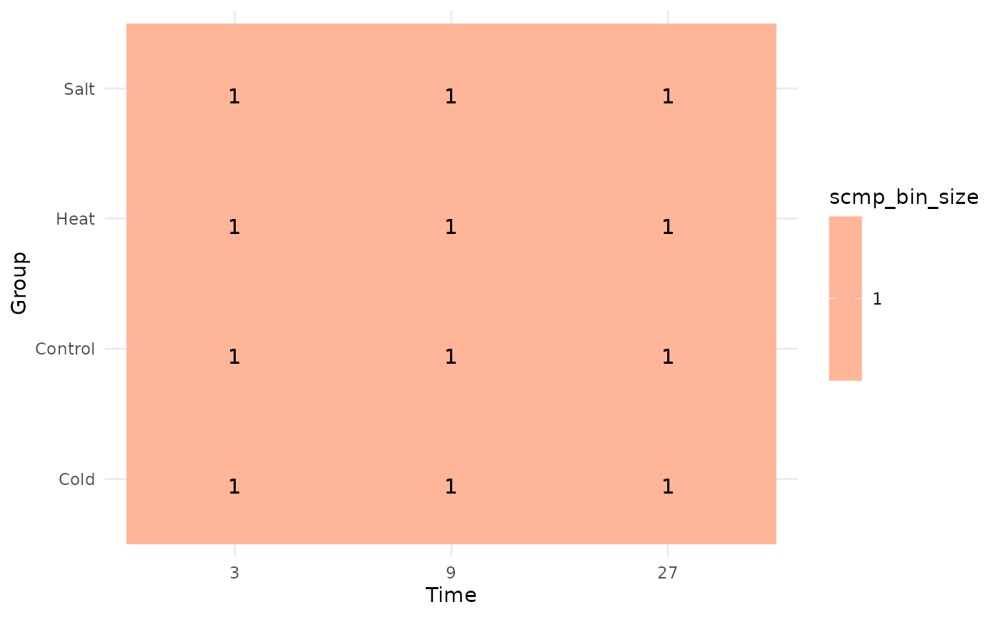
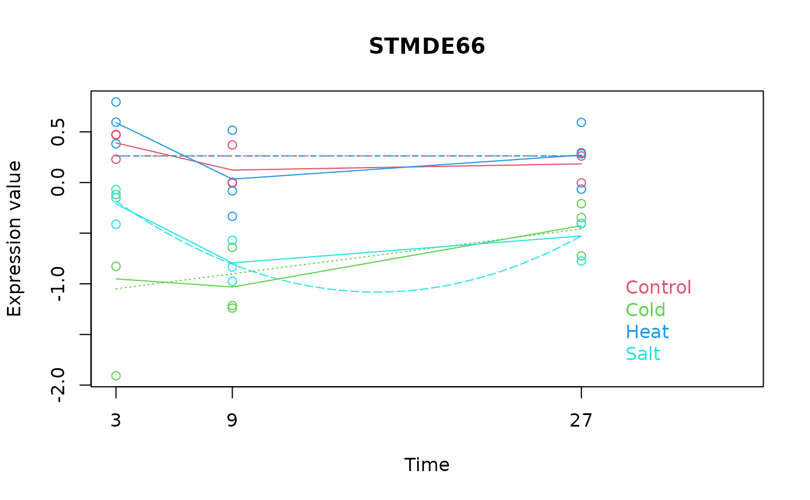
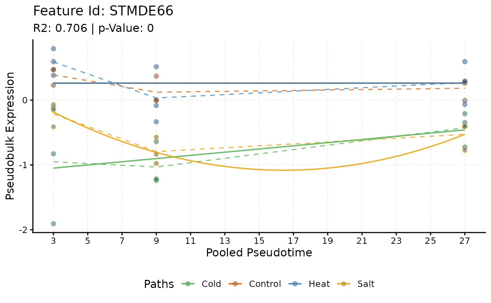

Bridging maSigPro Analysis
Guide to applying maSigPro workflow with scMaSigPro
Priyansh Srivastava
Source:vignettes/scMaSigPro-maSigPro.Rmd
scMaSigPro-maSigPro.RmdAbstract
scMaSigPro is an R package designed for the serial
analysis of single-cell RNA-seq (scRNA-Seq) data along inferred
pseudotime. It builds upon the maSigPro
Bioconductor package to identify genes with significant expression
changes across different branching paths in a pseudotime-ordered
scRNA-Seq dataset. This vignette illustrates the workflow of the
original maSigPro
Bioconductor package of using scMaSigPro.
Introduction
scMaSigPro is a polynomial regression-based approach
inspired by the maSigPro
Bioconductor package tailored for scRNA-Seq data. It first discretizes
single cell expression along inferred pseudotime while preserving order.
Afterwards it applies the maSigPro
model to pinpoint genes exhibiting significant expression profile
differences among branching paths and pseudotime.
Overview of maSigPro
maSigPro (microarray significant profiles) is a bioconductor package. Originally designed for microarray data analysis, maSigPro focuses on identifying genes with significant expression profiles that vary among different experimental groups, particularly in time-course experiments.
Adaptation for Bulk-RNA Seq Data
In 2016, the maSigPro package was adapted for bulk-RNA seq data, a crucial development given the distinct differences between microarray and RNA-Seq technologies. Unlike the distributions typically seen in microarray data, bulk-RNA Seq data generally follows a Negative Binomial Distribution, which is more apt for count data like RNA-Seq, characterized by variance often exceeding the mean.
This adaptation brought in explicit theta parameterization, critical
for RNA-Seq data analysis as the theta parameter represents the
dispersion in the Negative Binomial Distribution. Such parameterization
enhances the accuracy in modeling gene expression variability, a key
factor in identifying significant changes in gene expression, thereby
marking a significant step forward in the application of
maSigPro to the more complex RNA-Seq data.
Installation
Currently, scMaSigPro is available on GitHub and can be
installed as follows:
# Install BiocManager if needed, then scMaSigPro together with its
# Bioconductor dependencies from GitHub
if (!requireNamespace("BiocManager", quietly = TRUE)) {
install.packages("BiocManager")
}
BiocManager::install("BioBam/scMaSigPro")Installing maSigPro
You can easily install maSigPro from Bioconductor using
the following steps:
# Install Bioconductor if not already installed
if (!require("BiocManager", quietly = TRUE)) {
install.packages("BiocManager")
}
# install maSigPro
BiocManager::install("maSigPro")Setup
First, we need to load both scMaSigPro and
maSigPro. Additionally, we will load testthat,
a user-friendly testing framework for R that integrates well with
existing workflows. We will use testthat to verify if
scMaSigPro produces the same results as
maSigPro when used in bulk mode.
# load scMaSigPro
library(scMaSigPro)
# load maSigPro
library(maSigPro)
# We will also keep checking the output
library(testthat)Setting up the data
In this tutorial, we will use datasets from maSigPro and
aim to replicate the same analysis pipeline using
scMaSigPro. For more detailed information about the data
analysis, refer to the original maSigPro
vignette-userguide
# load counts
data(data.abiotic)
# load Design file
data(edesign.abiotic)
# save with different names for scMaSigPro
count <- data.abiotic
metadata <- as.data.frame(edesign.abiotic)Let’s briefly examine each dataset:
## Control_3H_1 Control_3H_2 Control_3H_3 Control_9H_1 Control_9H_2
## STMDF90 0.13735714 -0.3653065 -0.15329448 0.44754535 0.287476796
## STMCJ24 NA NA NA NA NA
## STMJH42 0.07864449 0.1002328 -0.17365488 -0.25279484 0.184855409
## STMDE66 0.22976991 0.4740975 0.46930716 0.37101059 -0.004992029
## STMIX74 0.14407618 -0.4801864 -0.07847999 0.05692331 0.013045420## Time Replicate Control Cold Heat
## Control_3H_1 3 1 1 0 0
## Control_3H_2 3 1 1 0 0
## Control_3H_3 3 1 1 0 0
## Control_9H_1 9 2 1 0 0
## Control_9H_2 9 2 1 0 0In edesign.abiotic, there are four groups, including one control group. The experiment features experimental capture times, which are distinct from Pseudotime, and includes temporal replicates.
To simplify the analysis, we’ll convert the binarized groups into a
single column. scMaSigPro automatically binarizes groups
internally, reducing the likelihood of errors.
# Add group column
metadata$Group <- apply(metadata[, c(3:6)], 1, FUN = function(x) {
return(names(x[x == 1]))
})
# Remove binary columns
metadata <- metadata[,
!(colnames(metadata) %in% c("Control", "Cold", "Heat", "Salt")),
drop = FALSE
]
# View
print(metadata[c(1:5), ])## Time Replicate Group
## Control_3H_1 3 1 Control
## Control_3H_2 3 1 Control
## Control_3H_3 3 1 Control
## Control_9H_1 9 2 Control
## Control_9H_2 9 2 ControlCreating objects for scMaSigPro
scMaSigPro utilizes S4 classes, and therefore, the
initial step involves creating an object of the scMaSigPro
class, also known as scmpObject. To do this, we use the
create_scmp() function. We will use the same object
throughout the tutorial to show the concept of S4 classes. On the other
hand for maSigPro we will be making different S3 objects as
shown in the `original
tutorial.
As we are using scMaSigPro in bulk mode, we will set
use_as_bin = TRUE. This directs the data to the dense slot of the
scmpObject, allowing us to proceed with the analysis without using
sc.squeeze(), which is specifically designed for scRNA-Seq
pseudo-bulking.
scmp_ob <- create_scmp(
counts = count,
cell_data = metadata,
ptime_col = "Time",
path_col = "Group",
use_as_bin = TRUE
)
# Print Console output
scmp_ob## Class: ScMaSigProClass
## nCells: 36
## nFeatures: 1000
## Pseudotime Range: 3 27
## Branching Paths: Control, Cold, Heat, Salt
## Binned Pseudotime: 3-27(Range), 13(Mean),
## Number of bins-> Cold: 9 Control: 9 Heat: 9 Salt: 9
## Average bin Size-> Cold: 1 Control: 1 Heat: 1 Salt: 1In the console output, we can observe that the data has been
transferred to the dense slot. We can visualize this using
plotBinTile().
plotBinTile(scmp_ob)
Next, we need to verify if scMaSigPro has created the
appropriate count matrix. For this, we will use
testthat::expect_identical(). This function highlights any
mismatches; if everything is identical, it will not throw an error. The
eDense() function retrieves the dense expression file from
the scMaSigPro object.
expect_identical(
object = as.data.frame(eDense(scmp_ob)),
expected = data.abiotic
)No errors were thrown, indicating that our setup is correct and we can proceed with the analysis.
Creatin of Regression Matrix
The function maSigPro::make.design.matrix() is used to
create a regression matrix for fitting the full regression model. In
scMaSigPro, this task is accomplished using
sc.set.poly(), where the regression matrix is referred to
as “predictor_matrix”. We will also verify that scMaSigPro
has correctly performed binarization, as specified in
edesign.abiotic.
maSigPro::make.design.matrix() and
scMaSigPro::sc.set.poly()
# Using maSigPro
design <- make.design.matrix(edesign.abiotic, degree = 2)
# Using scMaSigPro
scmp_ob <- sc.set.poly(scmp_ob, poly_degree = 2)
# Comparing binarization results
expect_equal(pathAssign(scmp_ob), expected = edesign.abiotic)
# Comparing regression matrices
expect_identical(predictors(scmp_ob), expected = design$dis)No errors were thrown, so we can proceed with the analysis.
Detecting Non-Flat Profiles with
maSigPro::p.vector()
To compute a regression fit for each gene, maSigPro uses
p.vector(), while scMaSigPro uses
sc.p.vector(). The main difference is the offset parameter
in scMaSigPro, which accounts for variations in bin sizes.
Since we are not dealing with scRNA-Seq data, we will disable this
parameter.
# Using maSigPro
gc <- capture_output(fit <- p.vector(
data.abiotic, design,
Q = 0.05,
MT.adjust = "BH", min.obs = 20
))
# Using ScMaSigPro
scmp_ob <- sc.p.vector(scmp_ob,
min_na = 20,
verbose = FALSE,
link = "identity",
offset = FALSE,
max_it = 25,
epsilon = 0.00001,
family = gaussian()
)Now, we’ll compare the S3 object
fit frommaSigPro::p.vector()with the results fromsc.p.vector()`:
# scmpResults() has one row per gene, with NA p-values for the genes left
# out for having fewer than min_na values: compare the fitted genes
expect_identical(
rownames(scmpResults(scmp_ob))[!is.na(scmpResults(scmp_ob)$p_value)],
expected = rownames(fit$p.vector)
)
# Compare p-values
expect_identical(
scmpResults(scmp_ob)[rownames(fit$p.vector), "p_value"],
expected = unname(fit$p.vector[, 1])
)
# Compare adjusted p-values
pad <- scmpResults(scmp_ob)[rownames(fit$p.vector), "adj_p_value"]
expect_identical(pad, expected = fit$p.adjusted)Detecting Significant Polynomial Terms with
maSigPro::T.fit()
Next, we apply a variable selection procedure to identify significant
polynomial terms for each gene, using T.fit() and
sc.t.fit().
# Using maSigPro
gc <- capture_output(tstep <- T.fit(fit, step.method = "backward", alfa = 0.05))
# Using scMaSigPro
scmp_ob <- sc.t.fit(scmp_ob,
offset = FALSE,
verbose = FALSE,
epsilon = 0.00001,
family = gaussian()
)We will compare the s3 object tstep from
maSigPro::T.fit() with the results from
sc.t.fit():
# Solutions
expect_identical(showSol(scmp_ob), expected = tstep$sol)
# Coefficients
expect_identical(showCoeff(scmp_ob), expected = tstep$coefficients)
# Group Coefficients
expect_identical(showGroupCoeff(scmp_ob), expected = tstep$group.coeffs)
# tscore
expect_identical(as.data.frame(showTS(scmp_ob)), expected = tstep$t.score)R-Square Filter with maSigPro::get.siggenes()
The next step is to generate lists of significant genes based on
desired biological question. This is achieved using the
get.siggenes() function in maSigPro and
sc.filter() in scMaSigPro.
# maSigPro
sigs <- get.siggenes(tstep, rsq = 0.6, vars = "groups")
# scMaSigPro
scmp_ob <- sc.filter(scmp_ob, rsq = 0.6, vars = "groups")We’ll compare the s3 object (sigs) from `maSigPro::get.siggenes()’ with the results from sc.filter()’:
# The genes of each list are TRUE in its sig_ column of scmpResults()
# Compare Cold vs Control
expect_identical(
rownames(scmpResults(scmp_ob))[scmpResults(scmp_ob)$sig_ColdvsControl],
expected = sigs$summary$ColdvsControl
)
# Compare Heat vs Control
expect_identical(
rownames(scmpResults(scmp_ob))[scmpResults(scmp_ob)$sig_HeatvsControl],
expected = sigs$summary$HeatvsControl[sigs$summary$HeatvsControl != " "]
)
# Compare Salt vs Control
expect_identical(
rownames(scmpResults(scmp_ob))[scmpResults(scmp_ob)$sig_SaltvsControl],
expected = sigs$summary$SaltvsControl[sigs$summary$SaltvsControl != " "]
)
# Compare Control
expect_identical(
rownames(scmpResults(scmp_ob))[scmpResults(scmp_ob)$sig_Control],
expected = sigs$summary$Control[sigs$summary$Control != " "]
)All comparisons indicate equality, confirming that the results are reproducible up to this point.
Visualizing the trends and Intersection
Having confirmed that the numerical values are identical for both methods, our next step is to assess whether the actual trends are also consistent.
Visualizing Intersection maSigPro::suma2Venn()

# Upset plot of scMaSigPro
plotIntersect(
scmpObj = scmp_ob,
min_intersection_size = 0
)
Visualizing Single trend with
maSigPro::PlotGroups()
The PlotGroups() function in maSigPro
generates a plot of gene expression profiles with time as the x-axis and
gene expression on the y-axis. In these plots, gene expression from the
same experimental group is represented in the same color, and lines are
drawn to join the averages of each time-group to visualize the trend of
each group over time. For scMaSigPro, this functionality is
achieved using plotTrend().
# Extracting gene "STMDE66" from data
STMDE66 <- data.abiotic[rownames(data.abiotic) == "STMDE66", ]
# Plotting with maSigPro
PlotGroups(STMDE66,
edesign = edesign.abiotic, show.fit = TRUE,
dis = design$dis, groups.vector = design$groups.vector
)
# Plotting the same gene with scMaSigPro
plotTrend(scmp_ob, "STMDE66",
logs = FALSE, pseudoCount = 0,
smoothness = 0.01, significant = FALSE,
summary_mode = "mean",
curves = TRUE, lines = TRUE, points = TRUE
)
Visualizing Cluster trend with
maSigPro::PlotProfiles()
# Plot clustered Trend
gc <- capture_output(
res <- see.genes(sigs$sig.genes$ColdvsControl,
show.fit = TRUE, dis = design$dis,
cluster.method = "hclust", cluster.data = 1, k = 9
)
)

# Compute Clusters
scmp_ob <- sc.cluster.trend(scmp_ob,
geneSet = "ColdvsControl",
cluster_by = "counts"
)
Session Info
sessionInfo(package = "scMaSigPro")## R version 4.6.1 (2026-06-24)
## Platform: x86_64-pc-linux-gnu
## Running under: Ubuntu 24.04.5 LTS
##
## Matrix products: default
## BLAS: /usr/lib/x86_64-linux-gnu/openblas-pthread/libblas.so.3
## LAPACK: /usr/lib/x86_64-linux-gnu/openblas-pthread/libopenblasp-r0.3.26.so; LAPACK version 3.12.0
##
## locale:
## [1] LC_CTYPE=C.UTF-8 LC_NUMERIC=C LC_TIME=C.UTF-8
## [4] LC_COLLATE=C.UTF-8 LC_MONETARY=C.UTF-8 LC_MESSAGES=C.UTF-8
## [7] LC_PAPER=C.UTF-8 LC_NAME=C LC_ADDRESS=C
## [10] LC_TELEPHONE=C LC_MEASUREMENT=C.UTF-8 LC_IDENTIFICATION=C
##
## time zone: UTC
## tzcode source: system (glibc)
##
## attached base packages:
## character(0)
##
## other attached packages:
## [1] scMaSigPro_0.6.0
##
## loaded via a namespace (and not attached):
## [1] SummarizedExperiment_1.42.0 gtable_0.3.6
## [3] xfun_0.62 bslib_0.12.0
## [5] ggplot2_4.0.3 Biobase_2.72.0
## [7] lattice_0.22-9 vctrs_0.7.3
## [9] tools_4.6.1 generics_0.1.4
## [11] stats4_4.6.1 parallel_4.6.1
## [13] methods_4.6.1 Matrix_1.7-5
## [15] RColorBrewer_1.1-3 S7_0.2.2
## [17] desc_1.4.3 S4Vectors_0.50.3
## [19] lifecycle_1.0.5 compiler_4.6.1
## [21] farver_2.1.2 textshaping_1.0.5
## [23] brio_1.1.5 BiocStyle_2.40.0
## [25] Seqinfo_1.2.0 codetools_0.2-20
## [27] htmltools_0.5.9 sass_0.4.10
## [29] yaml_2.3.12 pillar_1.11.1
## [31] venn_1.13 pkgdown_2.2.1
## [33] jquerylib_0.1.4 MASS_7.3-65
## [35] admisc_0.41 BiocParallel_1.46.0
## [37] SingleCellExperiment_1.34.0 DelayedArray_0.38.2
## [39] cachem_1.1.0 abind_1.4-8
## [41] mclust_6.1.3 nlme_3.1-169
## [43] maSigPro_1.84.0 digest_0.6.39
## [45] bookdown_0.48 splines_4.6.1
## [47] labeling_0.4.3 rprojroot_2.1.1
## [49] fastmap_1.2.0 grid_4.6.1
## [51] cli_3.6.6 SparseArray_1.12.3
## [53] magrittr_2.0.5 S4Arrays_1.12.1
## [55] grDevices_4.6.1 withr_3.0.3
## [57] waldo_0.6.2 utils_4.6.1
## [59] scales_1.4.0 rmarkdown_2.32
## [61] XVector_0.52.0 matrixStats_1.5.0
## [63] otel_0.2.0 gridExtra_2.3.1
## [65] datasets_4.6.1 ragg_1.5.2
## [67] stats_4.6.1 graphics_4.6.1
## [69] evaluate_1.0.5 UpSetR_1.4.1
## [71] knitr_1.52 GenomicRanges_1.64.0
## [73] IRanges_2.46.0 testthat_3.3.2
## [75] mgcv_1.9-4 rlang_1.3.0
## [77] Rcpp_1.1.2 glue_1.8.1
## [79] BiocManager_1.30.27 BiocGenerics_0.58.1
## [81] pkgload_1.5.3 base_4.6.1
## [83] jsonlite_2.0.0 plyr_1.8.9
## [85] R6_2.6.1 MatrixGenerics_1.24.0
## [87] systemfonts_1.3.2 fs_2.1.0
sessionInfo(package = "maSigPro")## R version 4.6.1 (2026-06-24)
## Platform: x86_64-pc-linux-gnu
## Running under: Ubuntu 24.04.5 LTS
##
## Matrix products: default
## BLAS: /usr/lib/x86_64-linux-gnu/openblas-pthread/libblas.so.3
## LAPACK: /usr/lib/x86_64-linux-gnu/openblas-pthread/libopenblasp-r0.3.26.so; LAPACK version 3.12.0
##
## locale:
## [1] LC_CTYPE=C.UTF-8 LC_NUMERIC=C LC_TIME=C.UTF-8
## [4] LC_COLLATE=C.UTF-8 LC_MONETARY=C.UTF-8 LC_MESSAGES=C.UTF-8
## [7] LC_PAPER=C.UTF-8 LC_NAME=C LC_ADDRESS=C
## [10] LC_TELEPHONE=C LC_MEASUREMENT=C.UTF-8 LC_IDENTIFICATION=C
##
## time zone: UTC
## tzcode source: system (glibc)
##
## attached base packages:
## character(0)
##
## other attached packages:
## [1] maSigPro_1.84.0
##
## loaded via a namespace (and not attached):
## [1] SummarizedExperiment_1.42.0 gtable_0.3.6
## [3] xfun_0.62 bslib_0.12.0
## [5] ggplot2_4.0.3 Biobase_2.72.0
## [7] lattice_0.22-9 vctrs_0.7.3
## [9] tools_4.6.1 generics_0.1.4
## [11] stats4_4.6.1 parallel_4.6.1
## [13] methods_4.6.1 Matrix_1.7-5
## [15] RColorBrewer_1.1-3 S7_0.2.2
## [17] desc_1.4.3 S4Vectors_0.50.3
## [19] lifecycle_1.0.5 compiler_4.6.1
## [21] farver_2.1.2 textshaping_1.0.5
## [23] brio_1.1.5 BiocStyle_2.40.0
## [25] Seqinfo_1.2.0 codetools_0.2-20
## [27] htmltools_0.5.9 sass_0.4.10
## [29] yaml_2.3.12 pillar_1.11.1
## [31] venn_1.13 pkgdown_2.2.1
## [33] jquerylib_0.1.4 MASS_7.3-65
## [35] admisc_0.41 BiocParallel_1.46.0
## [37] SingleCellExperiment_1.34.0 DelayedArray_0.38.2
## [39] cachem_1.1.0 abind_1.4-8
## [41] mclust_6.1.3 nlme_3.1-169
## [43] digest_0.6.39 bookdown_0.48
## [45] splines_4.6.1 labeling_0.4.3
## [47] scMaSigPro_0.6.0 rprojroot_2.1.1
## [49] fastmap_1.2.0 grid_4.6.1
## [51] cli_3.6.6 SparseArray_1.12.3
## [53] magrittr_2.0.5 S4Arrays_1.12.1
## [55] grDevices_4.6.1 withr_3.0.3
## [57] waldo_0.6.2 utils_4.6.1
## [59] scales_1.4.0 rmarkdown_2.32
## [61] XVector_0.52.0 matrixStats_1.5.0
## [63] otel_0.2.0 gridExtra_2.3.1
## [65] datasets_4.6.1 ragg_1.5.2
## [67] stats_4.6.1 graphics_4.6.1
## [69] evaluate_1.0.5 UpSetR_1.4.1
## [71] knitr_1.52 GenomicRanges_1.64.0
## [73] IRanges_2.46.0 testthat_3.3.2
## [75] mgcv_1.9-4 rlang_1.3.0
## [77] Rcpp_1.1.2 glue_1.8.1
## [79] BiocManager_1.30.27 BiocGenerics_0.58.1
## [81] pkgload_1.5.3 base_4.6.1
## [83] jsonlite_2.0.0 plyr_1.8.9
## [85] R6_2.6.1 MatrixGenerics_1.24.0
## [87] systemfonts_1.3.2 fs_2.1.0